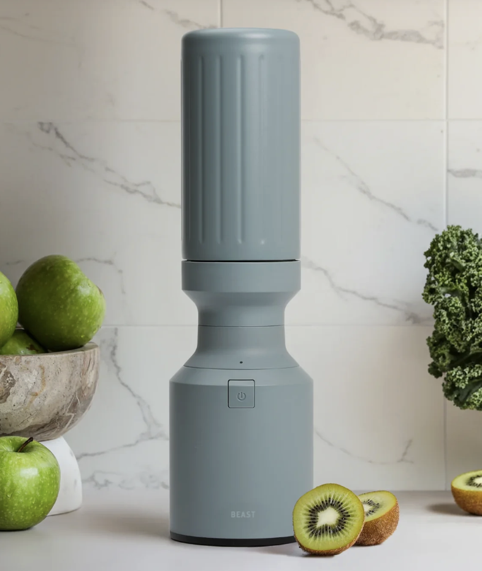
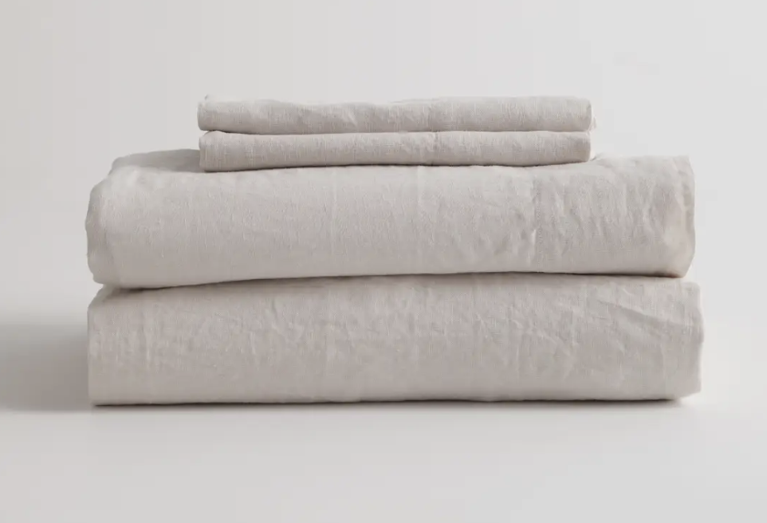
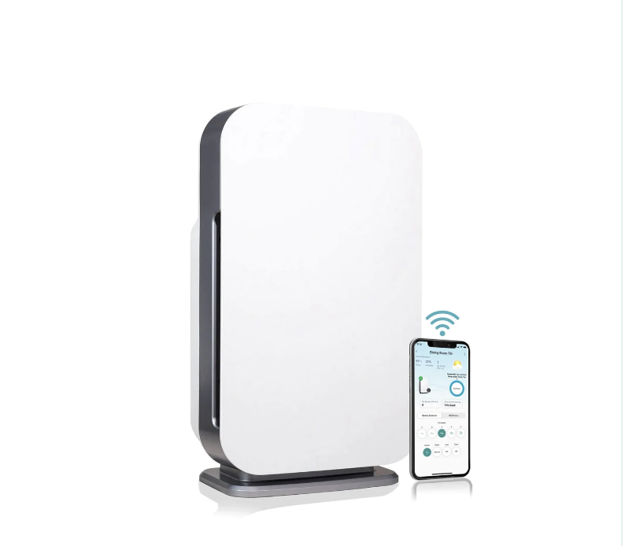
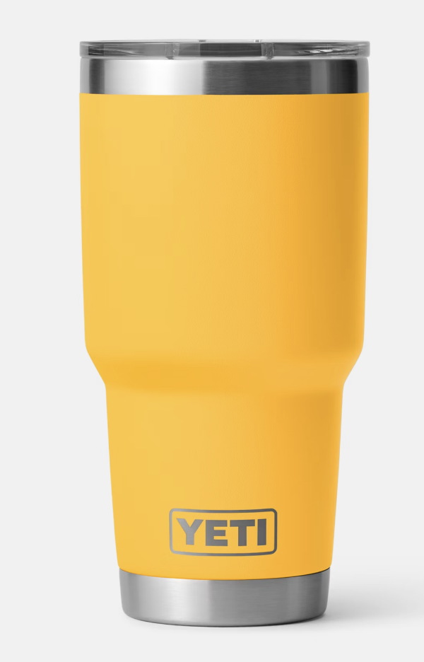
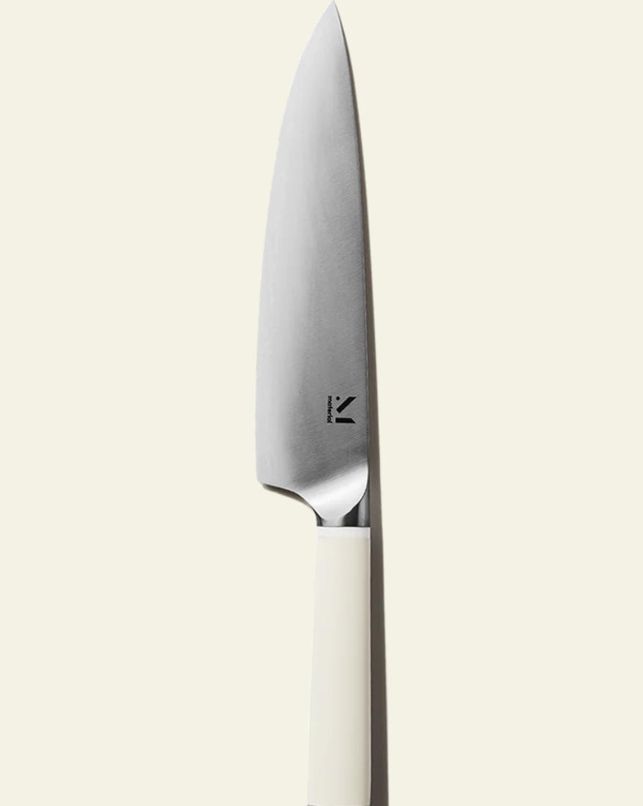
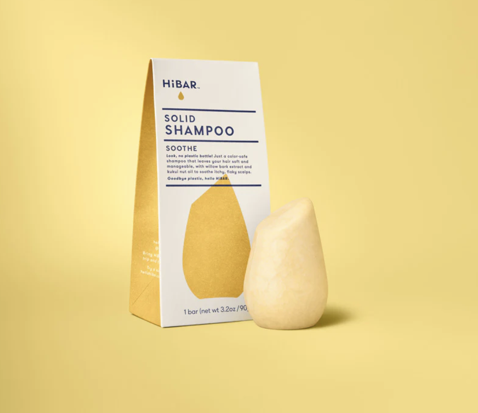
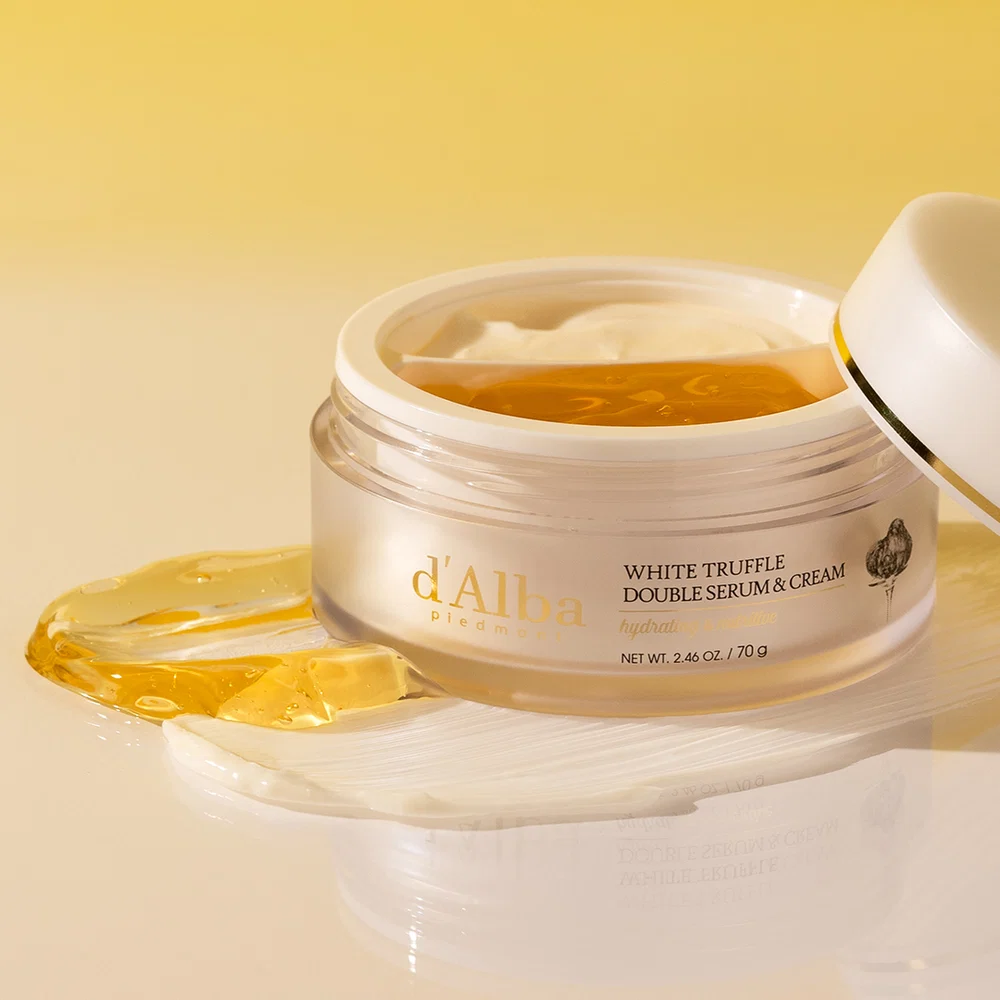
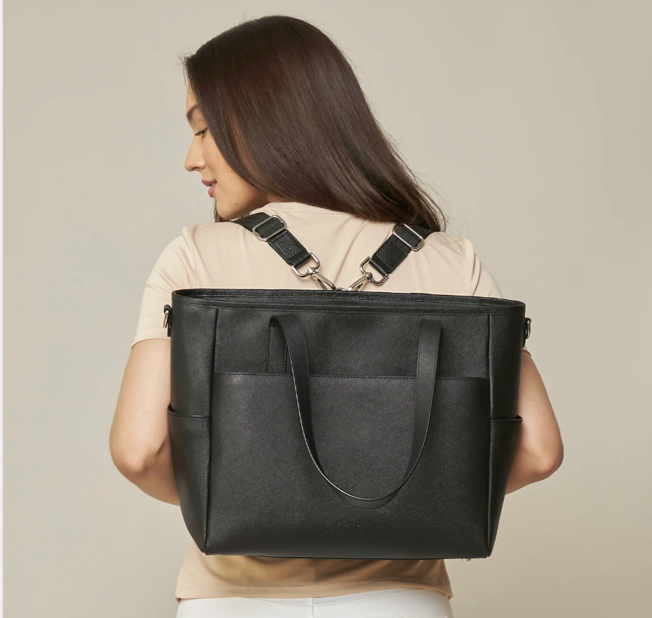
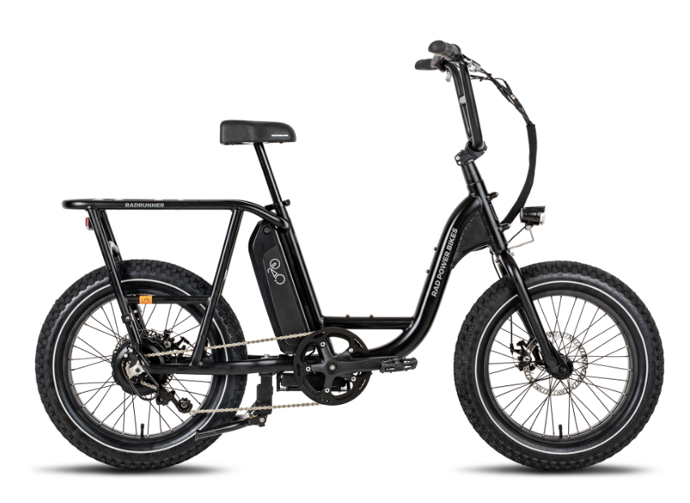

Beast® Mini 600 Stainless Steel
It was so hard to find a stainless steel blender. I have the stainless steel for Vitamix, but it's not good at mixing cold things, and I don't like its size. Then I discovered this one. I mainly use it for making smoothies, and blending eggs and cottage cheese up for a quiche recipe. It's the perfect size, it blends so nicely, and there's no plastic!

Quince
2 favorites here, the linen pants and linen sheets. I bought one of each, then another of each. I own many other things from Quince, but these are my 2 favorites.

Air Purifiers
I'm obsessed. We have one in each room, a combination of Coway Airmegas and Alen.
I spend way too much on filters each year (for them + my home filter + my shower purifier + my reverse osmosis systemt.) Filter all the things.
Yeti
We got my team custom 30oz rambler tumblers to celebrate deprecating some software, and I swear I drink way more water by using it. We made it a tradition and got a second one for the next software we deprecated. I could use a third, so waiting for my team to deprecate the next thing..

Material Knife
I didn't realize how life changing a good knife is until I bought this one.

Hibar Soothe shampoo bar
This is the only shampoo I've tried that manages to soothe my dry scalp. I am not a fan of the accompanying conditioner though. I was skeptical of bars, but it actually works pretty well and suds a lot.

d'Alba White Truffle Double Serum & Cream
I have a lot of kbeauty products, but one of my favorites is this face moisturizer. It feels so luxurious. I also have their balm and spray serum.

Pond LA Transform Tote
I searched around forever trying to find a nice laptop bag that could also be used as a backpack for commuting on the metro train. Ended up buying this bag and very happy with my choice. The bag has a nice structure to keep it upright, and fits my laptop and other work necessities. The backpack mode is very comfortable.

Rad Runner Bike
I have the Rad Runner 2, and I love it so much. I cannot go back to regular bikes now. The throttle is great for taking off, and the bike is sturdy and reliable. Although Los Angeles is not considered very bike friendly, where we live has a decent amount of bike paths.